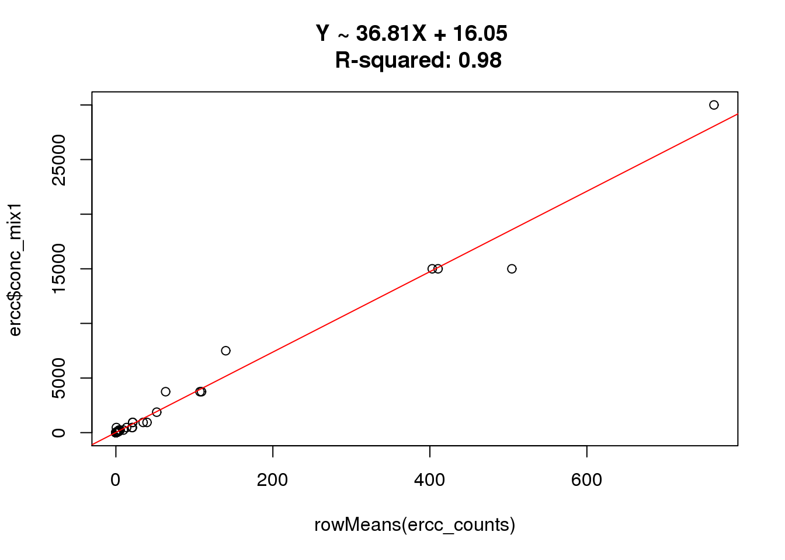
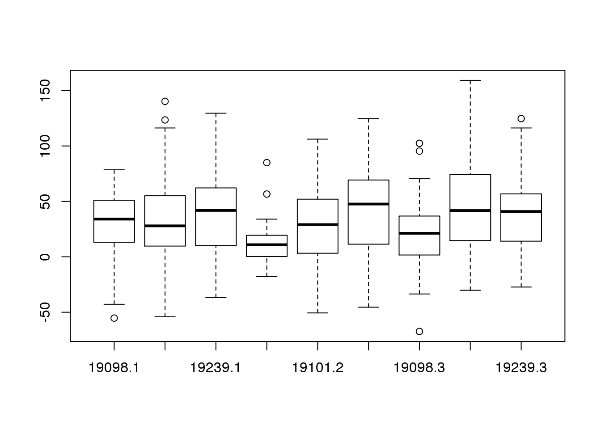
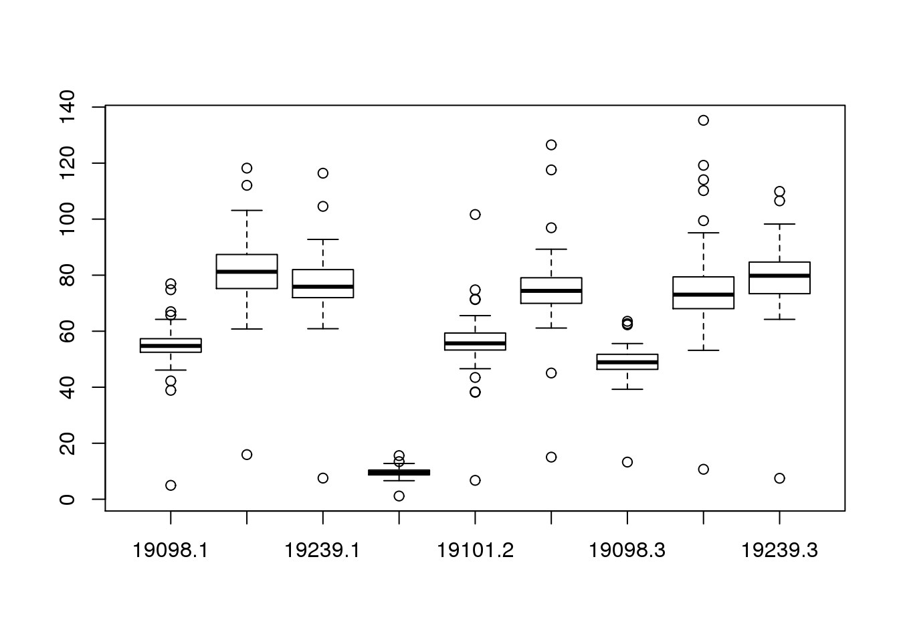
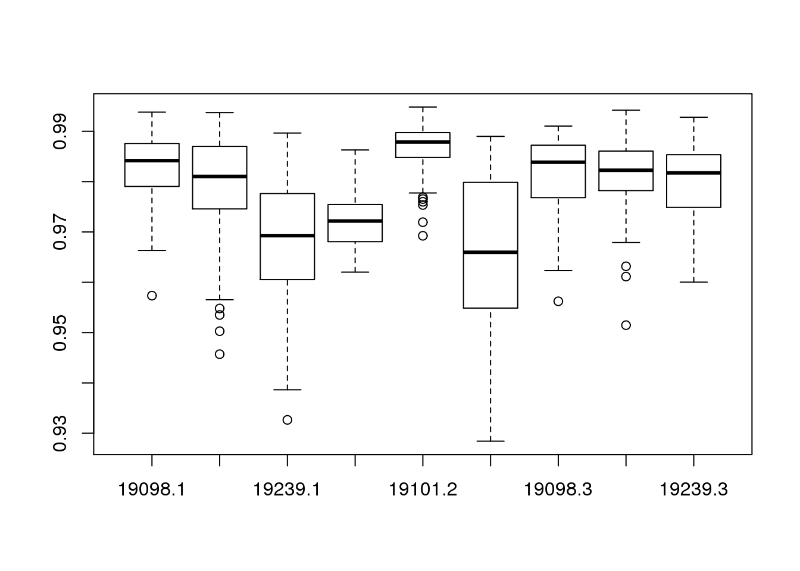
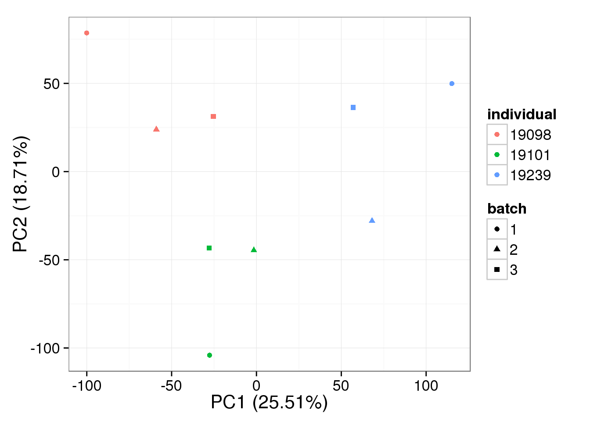
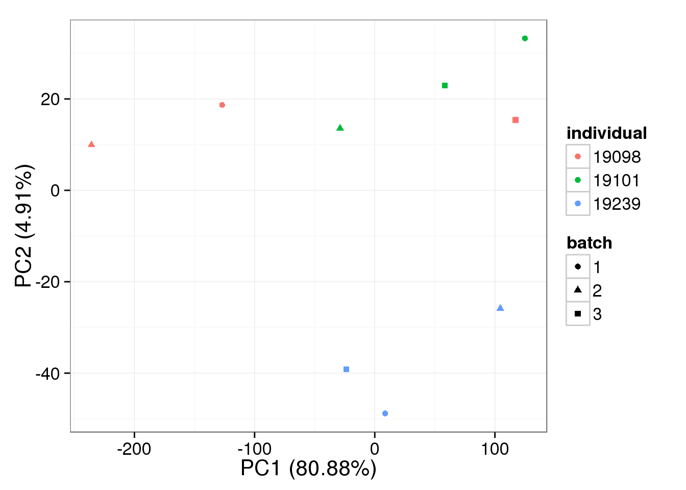
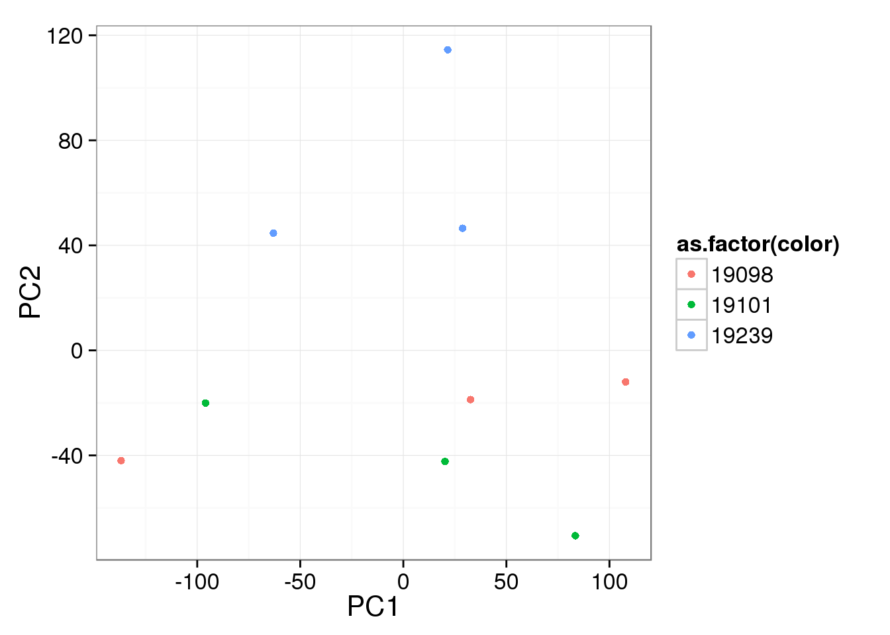
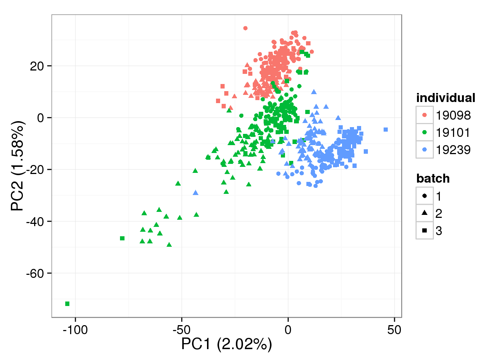
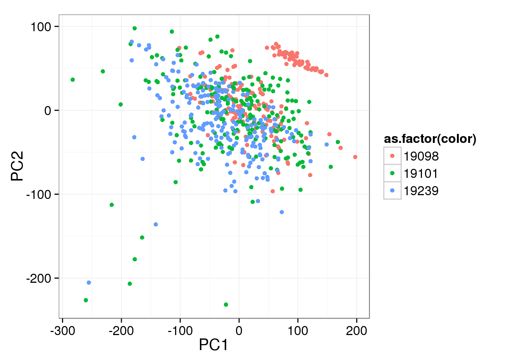
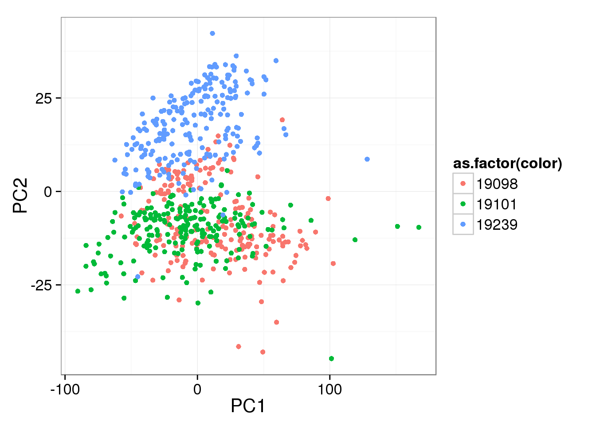

Last updated: 2015-06-16
Code version: a43ca3288509e4f90d216b0d2d36ed1db5770a6e
In this analysis:
library("ggplot2")
theme_set(theme_bw(base_size = 16))
library("RUVSeq")
source("functions.R")Input annotation.
anno <- read.table("../data/annotation.txt", header = TRUE,
stringsAsFactors = FALSE)
head(anno) individual batch well sample_id
1 19098 1 A01 NA19098.1.A01
2 19098 1 A02 NA19098.1.A02
3 19098 1 A03 NA19098.1.A03
4 19098 1 A04 NA19098.1.A04
5 19098 1 A05 NA19098.1.A05
6 19098 1 A06 NA19098.1.A06Input molecule counts.
molecules <- read.table("../data/molecules.txt", header = TRUE,
stringsAsFactors = FALSE)Input ERCC concentration information.
ercc <- read.table("../data/ercc-info.txt", header = TRUE, sep = "\t",
stringsAsFactors = FALSE)
colnames(ercc) <- c("num", "id", "subgroup", "conc_mix1", "conc_mix2",
"expected_fc", "log2_mix1_mix2")
head(ercc) num id subgroup conc_mix1 conc_mix2 expected_fc log2_mix1_mix2
1 1 ERCC-00130 A 30000.000 7500.00000 4 2
2 2 ERCC-00004 A 7500.000 1875.00000 4 2
3 3 ERCC-00136 A 1875.000 468.75000 4 2
4 4 ERCC-00108 A 937.500 234.37500 4 2
5 5 ERCC-00116 A 468.750 117.18750 4 2
6 6 ERCC-00092 A 234.375 58.59375 4 2stopifnot(nrow(ercc) == 92)Input list of quality single cells.
quality_single_cells <- scan("../data/quality-single-cells.txt",
what = "character")Keep only the single cells that passed the QC filters and the bulk samples.
molecules <- molecules[, grepl("bulk", colnames(molecules)) |
colnames(molecules) %in% quality_single_cells]
anno <- anno[anno$well == "bulk" | anno$sample_id %in% quality_single_cells, ]
stopifnot(ncol(molecules) == nrow(anno),
colnames(molecules) == anno$sample_id)Remove genes with zero read counts in the single cells or bulk samples.
expressed <- rowSums(molecules[, anno$well == "bulk"]) > 0 &
rowSums(molecules[, anno$well != "bulk"]) > 0
molecules <- molecules[expressed, ]
dim(molecules)[1] 17208 641How many of the 92 ERCC spike-ins had at least one read sequenced in at least one of the samples?
sum(grepl("ERCC", rownames(molecules)))[1] 69Subset to only the ERCC counts.
ercc_counts <- molecules[grep("ERCC", rownames(molecules)), ]Sort both the concentration and the counts by the ERCC ID.
ercc_counts <- ercc_counts[order(rownames(ercc_counts)), ]
ercc <- ercc[order(ercc$id), ]
# Also remove spike-ins with no counts
ercc <- ercc[ercc$id %in% rownames(ercc_counts), ]
stopifnot(rownames(ercc_counts) == ercc$id)What is the correlation of the mean molecules counts to the expected concentrations?
cor(rowMeans(ercc_counts), ercc$conc_mix1)[1] 0.9917616plot(rowMeans(ercc_counts), ercc$conc_mix1)
ercc_fit <- lm(ercc$conc_mix1 ~ rowMeans(ercc_counts))
abline(ercc_fit, col = "red")
title(sprintf("Y ~ %.2fX + %.2f \n R-squared: %.2f", ercc_fit$coefficients[2],
ercc_fit$coefficients[1], summary(ercc_fit)$r.squared))
What is the correlation of the mean molecules counts to the expected concentrations using only the single cells?
cor(rowMeans(ercc_counts[, grep("bulk", colnames(ercc_counts), invert = TRUE)]),
ercc$conc_mix1)[1] 0.9907436What is the correlation of the mean molecules counts to the expected concentrations using only the bulk samples?
cor(rowMeans(ercc_counts[, grep("bulk", colnames(ercc_counts))]),
ercc$conc_mix1)[1] 0.9887632How much variation is there in the correlation between the samples?
ercc_per_sample <- matrix(nrow = ncol(ercc_counts), ncol = 6)
colnames(ercc_per_sample) <- c("individual", "batch", "well",
"intercept", "slope", "r2")
for (i in 1:ncol(ercc_counts)) {
fit <- lm(ercc$conc_mix1 ~ ercc_counts[, i])
ercc_per_sample[i, ] <- c(anno$individual[i], anno$batch[i], anno$well[i],
fit$coefficients[1], fit$coefficients[2],
summary(fit)$r.squared)
}
ercc_per_sample <- as.data.frame(ercc_per_sample, stringsAsFactors = FALSE)
ercc_per_sample$intercept <- as.numeric(ercc_per_sample$intercept)
ercc_per_sample$slope <- as.numeric(ercc_per_sample$slope)
ercc_per_sample$r2 <- as.numeric(ercc_per_sample$r2)
str(ercc_per_sample)'data.frame': 641 obs. of 6 variables:
$ individual: chr "19098" "19098" "19098" "19098" ...
$ batch : chr "1" "1" "1" "1" ...
$ well : chr "A01" "A02" "A05" "A06" ...
$ intercept : num 41.4 61.8 30.2 52.1 53.7 ...
$ slope : num 57.9 52.6 55.6 54.2 56.5 ...
$ r2 : num 0.967 0.987 0.987 0.967 0.987 ...boxplot(intercept ~ individual + batch, data = ercc_per_sample)
boxplot(slope ~ individual + batch, data = ercc_per_sample)
boxplot(r2 ~ individual + batch, data = ercc_per_sample)
The normalization will be performed separately for bulk and single cells.
bulk_raw <- molecules[grep("ERCC", rownames(molecules), invert = TRUE),
grep("bulk", colnames(molecules))]
bulk_ercc <- ercc_counts[, grep("bulk", colnames(molecules))]
single_raw <- molecules[grep("ERCC", rownames(molecules), invert = TRUE),
grep("bulk", colnames(molecules), invert = TRUE)]
single_ercc <- ercc_counts[, grep("bulk", colnames(molecules), invert = TRUE)]
stopifnot(rownames(bulk_raw) == rownames(single_raw),
rownames(bulk_ercc) == rownames(single_ercc),
colnames(bulk_raw) == colnames(bulk_ercc),
colnames(single_raw) == colnames(single_ercc))Adjust each individual sample based on its ERCC counts.
bulk_norm <- bulk_raw
bulk_norm[, ] <- NA
for (i in 1:ncol(bulk_norm)) {
bulk_fit <- lm(ercc$conc_mix1 ~ bulk_ercc[, i])
bulk_norm[, i] <- bulk_raw[, i] * bulk_fit$coefficients[2] +
bulk_fit$coefficients[1]
}single_norm <- single_raw
single_norm[, ] <- NA
for (i in 1:ncol(single_norm)) {
single_fit <- lm(ercc$conc_mix1 ~ single_ercc[, i])
single_norm[, i] <- single_raw[, i] * single_fit$coefficients[2] +
single_fit$coefficients[1]
}Use RUVg from Risso et al., 2014. It uses the ERCC spike-ins as negative control genes to correct for unwanted variation.
bulk_ruv_object <- RUVg(x = as.matrix(rbind(bulk_ercc, bulk_raw)),
cIdx = 1:nrow(bulk_ercc), k = 1)
bulk_ruv <- bulk_ruv_object$normalizedCounts[
grep("ERCC", rownames(bulk_ruv_object$normalizedCounts), invert = TRUE), ]single_ruv_object <- RUVg(x = as.matrix(rbind(single_ercc, single_raw)),
cIdx = 1:nrow(single_ercc), k = 1)
single_ruv <- single_ruv_object$normalizedCounts[
grep("ERCC", rownames(single_ruv_object$normalizedCounts), invert = TRUE), ]Raw bulk data:
pca_bulk_raw <- run_pca(bulk_raw)
plot_pca(pca_bulk_raw$PCs, color = anno$individual[anno$well == "bulk"])
Normalized with a linear shift bulk data:
pca_bulk_norm <- run_pca(bulk_norm)
plot_pca(pca_bulk_norm$PCs, color = anno$individual[anno$well == "bulk"])
RUVg-normalized bulk data:
pca_bulk_ruv <- run_pca(bulk_ruv[apply(bulk_ruv, 1, var) > 0, ])
plot_pca(pca_bulk_ruv$PCs, color = anno$individual[anno$well == "bulk"])
Raw single cell data:
pca_single_raw <- run_pca(single_raw)
plot_pca(pca_single_raw$PCs, color = anno$individual[anno$well != "bulk"])
Normalized with a linear shift single cell data:
pca_single_norm <- run_pca(single_norm)
plot_pca(pca_single_norm$PCs, color = anno$individual[anno$well != "bulk"])
RUVg-normalized single cell data:
pca_single_ruv <- run_pca(single_ruv[apply(single_ruv, 1, var) > 0, ])
plot_pca(pca_single_ruv$PCs, color = anno$individual[anno$well != "bulk"])
sessionInfo()R version 3.2.0 (2015-04-16)
Platform: x86_64-unknown-linux-gnu (64-bit)
locale:
[1] LC_CTYPE=en_US.UTF-8 LC_NUMERIC=C
[3] LC_TIME=en_US.UTF-8 LC_COLLATE=en_US.UTF-8
[5] LC_MONETARY=en_US.UTF-8 LC_MESSAGES=en_US.UTF-8
[7] LC_PAPER=en_US.UTF-8 LC_NAME=C
[9] LC_ADDRESS=C LC_TELEPHONE=C
[11] LC_MEASUREMENT=en_US.UTF-8 LC_IDENTIFICATION=C
attached base packages:
[1] stats4 parallel stats graphics grDevices utils datasets
[8] methods base
other attached packages:
[1] RUVSeq_1.2.0 edgeR_3.10.2
[3] limma_3.24.9 EDASeq_2.2.0
[5] ShortRead_1.26.0 GenomicAlignments_1.4.1
[7] Rsamtools_1.20.4 GenomicRanges_1.20.5
[9] GenomeInfoDb_1.4.0 Biostrings_2.36.1
[11] XVector_0.8.0 IRanges_2.2.4
[13] S4Vectors_0.6.0 BiocParallel_1.2.2
[15] Biobase_2.28.0 BiocGenerics_0.14.0
[17] ggplot2_1.0.1 knitr_1.10.5
loaded via a namespace (and not attached):
[1] genefilter_1.50.0 reshape2_1.4.1 splines_3.2.0
[4] lattice_0.20-31 colorspace_1.2-6 htmltools_0.2.6
[7] yaml_2.1.13 XML_3.98-1.2 survival_2.38-1
[10] R.oo_1.19.0 DBI_0.3.1 R.utils_2.1.0
[13] aroma.light_2.4.0 RColorBrewer_1.1-2 lambda.r_1.1.7
[16] matrixStats_0.14.0 plyr_1.8.2 stringr_1.0.0
[19] zlibbioc_1.14.0 munsell_0.4.2 gtable_0.1.2
[22] futile.logger_1.4.1 hwriter_1.3.2 R.methodsS3_1.7.0
[25] evaluate_0.7 labeling_0.3 latticeExtra_0.6-26
[28] geneplotter_1.46.0 AnnotationDbi_1.30.1 proto_0.3-10
[31] Rcpp_0.11.6 xtable_1.7-4 scales_0.2.4
[34] formatR_1.2 annotate_1.46.0 digest_0.6.8
[37] stringi_0.4-1 DESeq_1.20.0 grid_3.2.0
[40] tools_3.2.0 bitops_1.0-6 magrittr_1.5
[43] RSQLite_1.0.0 futile.options_1.0.0 MASS_7.3-40
[46] rmarkdown_0.6.1